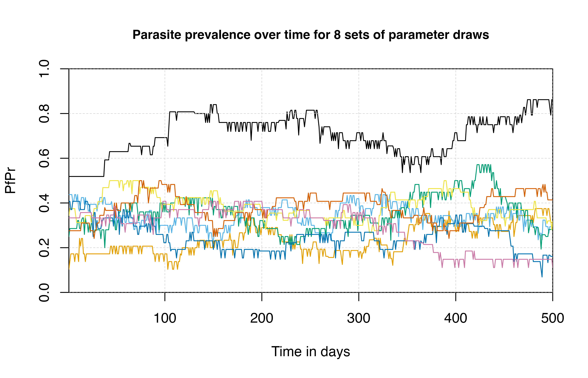

Parameter_variation.RmdThis vignette describes how variation in estimated model parameters can be incorporated into model simulations.
The malariasimulation transmission model was fit utilizing a Bayesian framework, which produced a posterior distribution of parameter sets. Default parameters for the model were taken as the median across 50 random sets of parameter draws.
## plot parasite prevalence with default model parameters
simparams <- get_parameters(list(
human_population = 100,
individual_mosquitoes = FALSE
))
# Default (median) model parameters
sim <- run_simulation(timesteps = 1000, simparams)
# plot the default median parameter
plot(
sim$timestep,
sim$n_detect_lm_730_3650 / sim$n_age_730_3650,
t = "l",
ylim = c(0, 1),
ylab = "PfPr",
xlab = "Time in days",
xaxs = "i", yaxs = "i",
lwd = 2, main = 'Parasite prevalence over time with default model parameters',
cex.main = 0.9)
grid(lty = 2, col = "grey80", lwd = 0.5)If needed, we can produce stochastic model outputs incorporating
variation in model parameters. This is done with the
set_parameter_draw function, which pulls parameter draws
from this joint posterior of Markov chain Monte Carlo (MCMC) fitting.
This function overrides the default model parameters with a sample from
one of 1000 draws from the joint posterior.
Keep in mind that set_parameter_draw must be called
prior to set_equilibrium, as the baseline transmission
intensity must be calibrated to new model parameters.
## run simulation on different samples of the joint posterior distribution
# plot the default median parameter
plot(
sim$timestep[1:500],
sim$n_detect_lm_730_3650[1:500] / sim$n_age_730_3650[1:500],
t = "l",
ylim = c(0, 1),
ylab = "PfPr",
xlab = "Time in days",
xaxs = "i", yaxs = "i",
main = 'Parasite prevalence over time for 8 sets of parameter draws',
cex.main = 0.9
)
grid(lty = 2, col = "grey80", lwd = 0.5)
for (i in 1:7) {
param_draw <- simparams |>
set_parameter_draw(sample(1:1000, 1)) |>
set_equilibrium(init_EIR = 5)
sim <- run_simulation(timesteps = 500, param_draw)
lines(sim$timestep, sim$n_detect_lm_730_3650 / sim$n_age_730_3650, col = cols[i])
}
For more information on uncertainty in parameters, please refer to The US President’s Malaria Initiative, Plasmodium falciparum transmission and mortality: A modelling study, Supplemental material, Section 4.